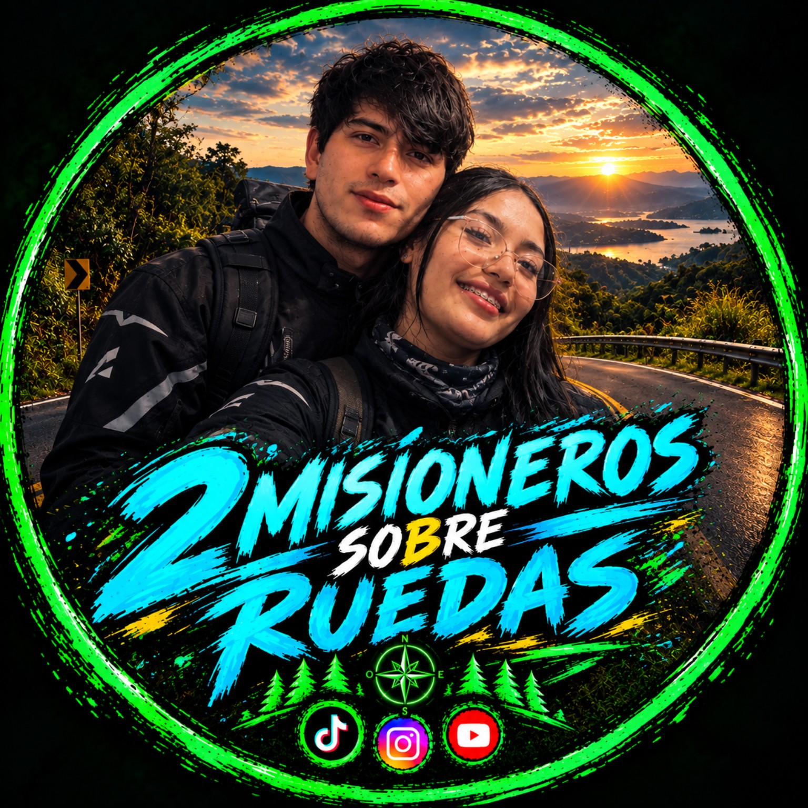

2 MISIONEROS SOBRE RUEDAS
Un sueño, dos motos y un año para hacerlo realidad.
📖 NUESTRA HISTORIA
Somos Mili y Ale, dos misioneros que un día decidimos dejar atrás nuestra tierra, nuestra familia y muchas de las cosas que conocíamos para comenzar una nueva etapa en Brasil.
Llegamos con la idea de trabajar, ahorrar y construir de a poco una nueva vida. Empezamos prácticamente desde cero, aprendiendo a desenvolvernos en otro país, trabajando día a día y adaptándonos a una realidad completamente diferente.
Pero mientras pasaba el tiempo, nació una idea que poco a poco se convirtió en un sueño mucho más grande: volver a Argentina, pero esta vez de una manera diferente.
Queremos comprar dos motos 110cc, prepararlas para el viaje y emprender una aventura recorriendo Argentina sobre dos ruedas. Queremos conocer sus rutas, sus paisajes, sus pueblos, sus lugares históricos y compartir cada kilómetro con ustedes.
Por eso nació 2 MISIONEROS SOBRE RUEDAS.
Durante 365 días vamos a trabajar, ahorrar, preparar nuestras motos, planificar las rutas y compartir todo el proceso. No queremos mostrar solamente el momento en que finalmente arrancamos; queremos que ustedes puedan acompañarnos desde el principio.
Vamos a mostrar los días buenos, los días difíciles, lo que vamos consiguiendo, lo que todavía nos falta y cada pequeño paso que nos acerque a nuestra meta.
Nuestro objetivo es simple: que cuando llegue el día 365, las motos estén listas y nosotros también.
Y entonces empieza la verdadera aventura: Argentina de norte a sur, pueblos, rutas, lugares históricos y paisajes que todavía no conocemos. Todo documentado para compartirlo con ustedes.
Y quién sabe... quizás Argentina sea solamente el comienzo.
Este no es solamente un viaje. Es el camino que vamos a recorrer durante un año para poder hacerlo realidad.
🏍️ NUESTRO PROYECTO
Trabajar · Ahorrar · Preparar · Partir
❤️ APOYÁ EL SUEÑO
Si querés acompañarnos y ayudarnos a acercarnos a nuestro objetivo, podés hacerlo desde acá.
🇦🇷 Mercado PagoO escaneá el QR: